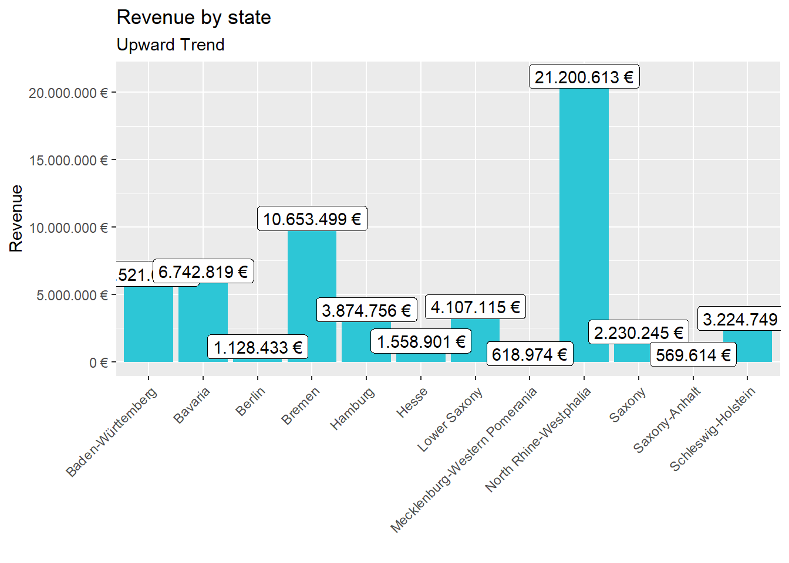
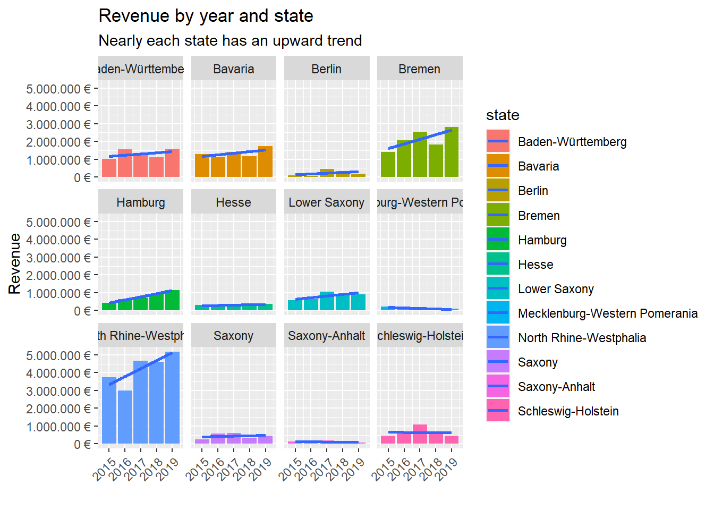

Last compiled: 2020-12-06
First do some Loading and joining Data
# SALES ANALYSIS ----
# 1.0 Load libraries ----
library(tidyverse)
library(readxl)
# 2.0 Importing Files ----
bikes_tbl <- read_excel(path = "./bike_sales/01_raw_data/bikes.xlsx")
orderlines_tbl <- read_excel(path = "./bike_sales/01_raw_data/orderlines.xlsx")
bikeshops_tbl <- read_excel(path = "./bike_sales/01_raw_data/bikeshops.xlsx")
# 3.0 Examining Data ----
# 4.0 Joining Data ----
bike_orderlines_joined_tbl <- orderlines_tbl %>% left_join(bikes_tbl, by = c("product.id" = "bike.id")) %>%
left_join(bikeshops_tbl, by = c("customer.id" = "bikeshop.id"))Next we do some wrangling of the Data
# 5.0 Wrangling Data ----
# All actions are chained with the pipe already. You can perform each step separately
# and use glimpse() or View() to validate your code. Store the result in a variable at the end of the steps.
bike_orderlines_wrangled_tbl <- bike_orderlines_joined_tbl %>%
# 5.1 Separate category name
separate(col = location,
into = c("city", "state"),
sep = ", ") %>%
# 5.2 Add the total price (price * quantity)
# Add a column to a tibble that uses a formula-style calculation of other columns
mutate(total.price = price * quantity) %>%
# 5.3 Optional: Reorganize. Using select to grab or remove unnecessary columns
# 5.3.1 by exact column name
select(-...1, -gender) %>%
# 5.3.2 by a pattern
# You can use the select_helpers to define patterns.
# Type ?ends_with and click on Select helpers in the documentation
select(-ends_with(".id")) %>%
# 5.3.3 Actually we need the column "order.id". Let's bind it back to the data
bind_cols(bike_orderlines_joined_tbl %>% select(order.id)) %>%
# 5.3.4 You can reorder the data by selecting the columns in your desired order.
# You can use select_helpers like contains() or everything()
select(order.id, contains("order"), contains("model"), contains("category"),
price, quantity, total.price,
everything()) %>%
# 5.4 Rename columns because we actually wanted underscores instead of the dots
# (one at the time vs. multiple at once)
rename(bikeshop = name) %>%
set_names(names(.) %>% str_replace_all("\\.", "_"))Get insights and plot Bar Charts
# 6.0 Business Insights ----
# 6.1 Sales by location (state) ----
#Step 1 - Manipulate
sales_by_state_tbl <- bike_orderlines_wrangled_tbl %>%
#Select columns
select(state, total_price) %>%
#Grouping by state and summarizing sales
group_by(state) %>%
summarize(sales = sum(total_price)) %>%
#Format $ Text
mutate(sales_text = scales::dollar(sales, big.mark = ".",
decimal.mark = ",",
prefix = "",
suffix = " €")) #Step 2 - Visualize
sales_by_state_tbl %>%
# Setup canvas with the columns state (x-axis) and sales (y-axis)
ggplot(aes(x = state, y = sales)) +
# Geometries
geom_col(fill = "#2DC6D6") + # Use geom_col for a bar plot
geom_label(aes(label = sales_text)) + # Adding labels to the bars
geom_smooth(method = "lm", se = FALSE) + # Adding a trendline
# Formatting
# scale_y_continuous(labels = scales::dollar) + # Change the y-axis.
# Again, we have to adjust it for euro values
scale_y_continuous(labels = scales::dollar_format(big.mark = ".",
decimal.mark = ",",
prefix = "",
suffix = " €")) +
#Theme
theme(axis.text.x = element_text(angle = 45, hjust = 1)) +
labs(
title = "Revenue by state",
subtitle = "Upward Trend",
x = "", # Override defaults for x and y
y = "Revenue"
)
Get insights and plot Bar Charts 1. Manipulate Data
# 6.2 Sales by Location (state) and year ----
library(lubridate)
# Step 1 - Manipulate
sales_by_year_state_tbl <- bike_orderlines_wrangled_tbl %>%
# Select columns and add a year
select(order_date, total_price, state) %>%
mutate(year = year(order_date)) %>%
# Group by and summarize year and state
group_by(year, state) %>%
summarize(sales = sum(total_price)) %>%
ungroup() %>%
#Format $ Text
mutate(sales_text = scales::dollar(sales, big.mark = ".",
decimal.mark = ",",
prefix = "",
suffix = " €"))# Step 2 - Visualize
sales_by_year_state_tbl %>%
#Set up x, y, fill
ggplot(aes(x = year, y = sales, fill = state)) +
#Geometries
geom_col() + # Use geom_col for a bar plot
geom_smooth(method = "lm", se = FALSE) + # Adding a trendline
#Facet
facet_wrap(~ state) +
#Formatting
scale_y_continuous(labels = scales::dollar_format(big.mark = ".",
decimal.mark = ",",
prefix = "",
suffix = " €")) +
#Theme
theme(axis.text.x = element_text(angle = 45, hjust = 1)) +
labs(
title = "Revenue by year and state",
subtitle = "Nearly each state has an upward trend",
fill = "state", # Changes the legend name
x = "",
y = "Revenue"
)